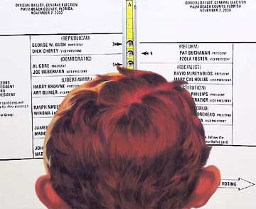

|

The Voter Qualification Quiz
This country has a mammoth problem, and we've got a fool-proof solution.
- - - - - - - - - -
by Rich Procter
 HE PROBLEM IS THAT, because of our 500 channel, 24/7 barrage of disinfotainment, many if not most glassy-eyed Consumer-Americans are unable to discern the difference between their own ever-burgeoning posteriors and Saddam's spider-hole bunker. My proof? A new poll revealing that 57% (!!!) of Americans believe that Saddam Hussein gave "substantial support" to al-Qaida terrorists before the war with Iraq. 38% also believe that Iraq had weapons of mass destruction. HE PROBLEM IS THAT, because of our 500 channel, 24/7 barrage of disinfotainment, many if not most glassy-eyed Consumer-Americans are unable to discern the difference between their own ever-burgeoning posteriors and Saddam's spider-hole bunker. My proof? A new poll revealing that 57% (!!!) of Americans believe that Saddam Hussein gave "substantial support" to al-Qaida terrorists before the war with Iraq. 38% also believe that Iraq had weapons of mass destruction.
These aren't just misperceptions. They are nuggets of "anti-truth." They are erroneous, counterfactual, and DUMB. They are black holes of reason.
Ponder this - the blockheads who believe these fantasies have the same vote you do - and many will vote (if they can find their polling place) UNLESS WE STOP THEM!
How? My new, mandatory NATIONAL POLITICAL-CULTURAL VOTER-QUALIFICATION QUIZ(tm)
My goal is purge dimwits, chowderheads, dolts, chumps, dittoheads, dullards, imbeciles, half-wits, Fox News watchers, simpletons, clods and morons from the voter rolls. It's one thing to flit about in blissful ignorance, but to believe out and out bullshit like this is too much. These bozos get a one-way ticket to electoral Palooka-ville.
THE TEST - TEN QUESTIONS - TRUE-FALSE - ONLY A PERFECT SCORE ALLOWS YOU TO RECEIVE A BALLOT
(T/F) Saddam Hussein had Weapons of Mass Destruction, including biological, chemical, and nuclear weapons, as well as a vast cache of sling-shots, spit-wads, water balloons, and a battery of devastating bon mots and retorts devised by his phalanx of speech writers.
(T/F) It is possible to make money gambling in Las Vegas. Those lavish buildings, hugely ornate casinos and ostentatious hotels were built with money from insane philanthropists.
(T/F) Saddam Hussein worked closely with Osama bin Laden's al-Qaida terror network, which is no way related to the Fox Television Network, except that both are operated by glassy-eyed zealots with no regard for the truth.
(T/F) George W. "Top Gun" Bush was the most decorated fighter pilot in the Vietnam conflict, personally shooting down 31 Russian MIG fighters, capturing Ho Chi Minh at knife-point, and rescuing John McCain from his cell in the Hanoi Hilton. The Rambo movies are toned-down versions of his exploits.
(T/F) It is possible to improve your golf game merely by purchasing expensive new equipment, without practicing or taking lessons.
(T/F) The Bush tax cuts have provided much needed tax relief to the middle class and small business owners, instead of the small army of cynical, gleeful millionaires who are funding President's re-election campaign from their yachts in the Cayman Islands.
(T/F) Saddam Hussein kicked U.N. Weapons Inspectors out of Iraq. The United States did not tell Hans Blix to get them out of there because the U.S. was going to invade Iraq because President Bush had just seen "High Noon" for the umpteenth time, and he was itching to show how courageous he was by risking the lives of other people's children.
(T/F) It's possible to lose weight and look like a fashion model just by purchasing a product advertised on late-night television. You don't need to eat less or exercise more. Swear to God.
(T/F) We are winning the War in Iraq. We are greatly loved by the Iraqi people for liberating them from the tyranny of Saddam Hussein. Those people you see on TV killing our soldiers, using grenade launchers on our armored vehicles, suicide bombing our facilities and vowing to rally one billion Muslims to destroy the Great Satan in order to purge the earth of the evil ones in the United States are just disgruntled soreheads who hate freedom.
(T/F) Drinking a certain brand of light beer will cause gorgeous blonde twins to make themselves available to you for your sexual gratification, with no obligation or emotional strings attached.
So, how did you do? Let's check those scores
10 FALSE...qualifies you to vote. Democratic.
1-3 TRUE...qualifies you to get a clue, before it's too late.
4-7 TRUE...qualifies you for a six month stint at the George Orwell Media De-Toxification Center. You brain has been washed, rinsed, and fluff-dried by the Bush Administration.
8-9 TRUE... means you are beyond hope. You not only listen to way too much Rush Limbaugh, you've actually "gotten tweaked" in a parking lot with Big Pharma himself!
10 TRUE...thanks for taking the test, Mr. President!

|